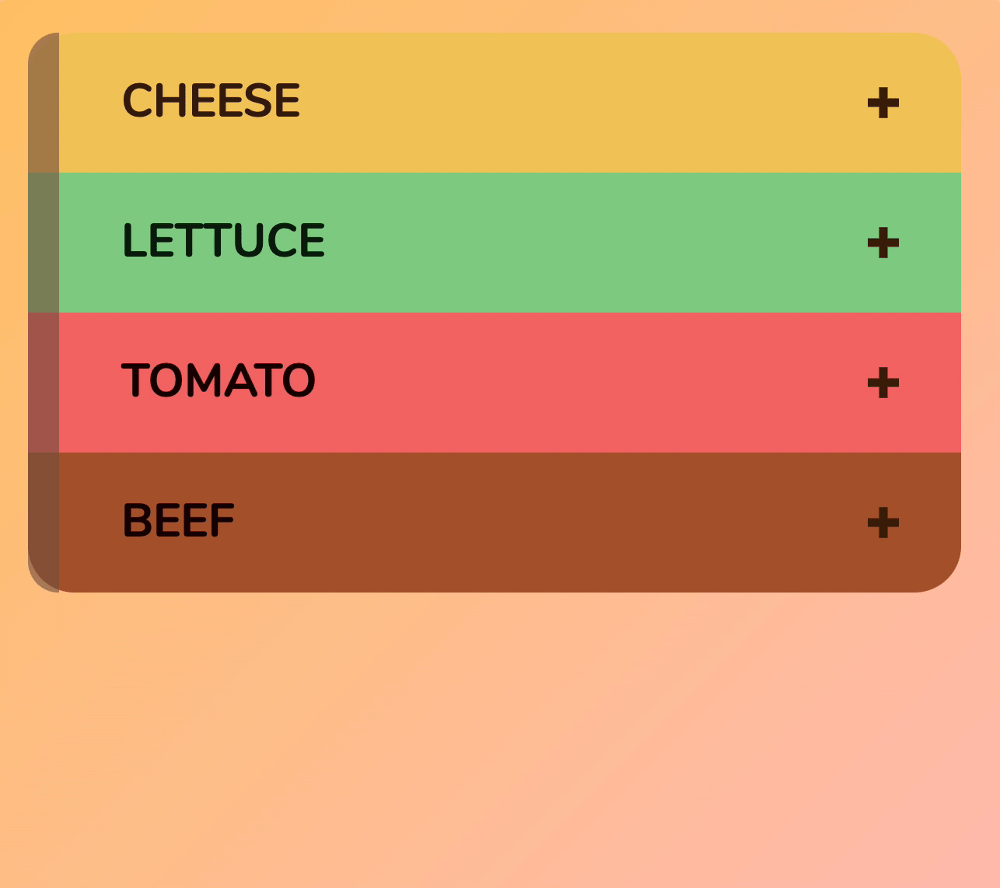

You’ll learn to build an accordion in this lesson. Accordions are components that lets you show or hide sections of information. They look like this:

HTML for the accordion
When an accordion is closed, you see only the header of the accordion. You don’t see anything else.
When the accordion is open, you see the contents of the accordion. Here, the first accordion is opened.
You want to keep the contents of your accordion close together. One easy way is to wrap them in an enclosing <div>.
When the page loads, the accordion should be closed. We can hide the contents by setting display property to none. This CSS has been written for you.
/* Closes the accordion */
.accordion__content {
display: none;
}
The accordion header
When we click an accordion’s header, we want to open the accordion. Since we want to click the accordion’s header, we should wrap the header’s content in a <button> element. This lets us provide custom functionality (opening the accordion) with JavaScript.
In this case, I have <h2> and <button> in .accordion__header because:
I used <h2> to style the accordion’s text.
<h2> inside <button> is not valid HTML. <button> inside <h2> is.
To open the accordion, we can add an is-open class to the .accordion. When is-open is present, we show .accordion__content by changing display to something other than none.
In this case, I’m going to set display to grid because I styled the contents with CSS Grid.
<!-- Opened accordion -->
<div class="accordion is-open"> ...</div>
When we built the Off-canvas menu and Modal, we added offsite-is-open and modal-is-open to <body>. If we don’t add “offsite” or “modal”, we won’t know what is opened.
<!-- What is open? -->
<body class="is-open"> <!--...--> </body>
In the case of accordions, is-open is enough because it’s quite obvious the accordion is opened.
<!-- It's obvious what is open -->
<div class="accordion is-open"> ...</div>
Switching the indicators
Indicators show what would happen if you click on them:
If you press +, you will open the accordion
If you press -, you will close the accordion
When the accordion is closed, we need to show the + icon. We also need to hide the - icon.
To open the first accordion’s content, you add the is-open class to the first accordion. To close the first accordion’s content, you remove is-open from the first accordion.